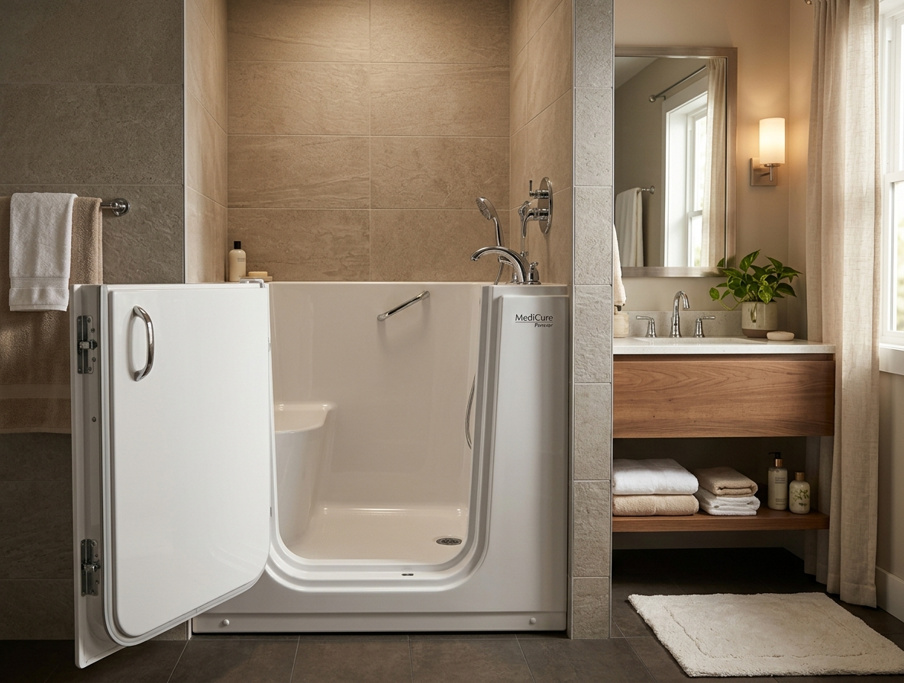

Walk-In Tubs for Comfortable, Seated Bathing
Compare walk-in bathtub styles, accessibility features, installation requirements and costs before deciding whether one may fit your home.

What is a walk-in tub?
A walk-in tub is a deep bathtub with a watertight door in its side and a built-in seat. You open the door, step over a low sill, sit down, close the door, and fill the tub around you. The walls are higher than a standard tub’s, so a seated adult can soak to chest depth. Most models offer a handheld shower, and common features include grab bars, slip-resistant floors, and anti-scald controls.
The defining trade-off: the door must stay closed while the tub holds water, so you enter before filling and wait inside while it drains. Honest expectations about that experience — covered below — are the difference between owners who love these tubs and owners who regret them.
Who may consider one?
A walk-in tub is not the right fit for every mobility limitation — standard models are difficult for wheelchair transfers, and the door sill still requires a stable step. When needs are complex, a professional assessment helps. If you’re weighing both paths, start with the comparison guide.
Walk-in tub types
Not sure which tub type fits your bathroom? A local assessment answers it in one visit.
Get Local Project OptionsDoor options and transfers
Inward-opening doors seal with the help of water pressure and need no clearance beside the tub, but can’t open until the water drains and swing into your space during entry. Outward-opening doors give a clearer entry and open even when water is present, but need free space in the bathroom and usually cost more. Wider openings are built for seated transfers and carry the largest premium.
Bathroom clearance matters as much as the door: check the swing path, the space beside the tub for transfers, and the route from the bathroom door. No product should be called wheelchair accessible without verified specifications for the specific model and installation.
What using a walk-in tub is like
For people who love baths, this routine is a fair trade for safe soaking. For people who mainly want quick, safe bathing, a walk-in shower is usually the simpler answer.
Practical features vs. comfort features
Practical accessibility features — budget these first
Low entry sill Built-in seating Grab bars Slip-resistant flooring Handheld showerhead Anti-scald controls Fast drainComfort and spa features — legitimate, but optional
Heated seat Air jets Water jets Chromotherapy lighting Aromatherapy packagesEach adds equipment, electrical needs, and future service points — the honest pros and cons are in our guides.
Walk-in tub costs
National planning estimates, not quotes. The complete installed price should cover the tub, delivery, removal of the old fixture, labor, plumbing, electrical where needed, wall surround, flooring touch-ups, water-heater considerations, and finish work.
Installation considerations
How to compare walk-in tub quotes
Ask every bidder for these as separate written lines:
Avoiding pressure sales
In-home consultations are normal in this industry; deciding on your own schedule is normal too. A fair offer survives a week of thinking.
Compare Local QuotesFinancial assistance
Original Medicare generally does not list walk-in tubs as standard durable medical equipment; some Medicare Advantage plans offer supplemental home-safety benefits. Medicaid home-modification programs vary by state, and certain VA programs may assist eligible veterans with medically necessary modifications. Coverage is never guaranteed, programs vary, prior authorization may be required — and Aging at Home Advisor is not a government agency. Start with the full financial assistance guide.
Frequently asked questions
How does a walk-in tub work?
You open the watertight door, step over a low sill, sit on the built-in seat, and close the door. The tub then fills around you; after bathing, it drains before the door opens again. Most models include a handheld shower for rinsing.
How much does a walk-in tub cost?
A complete installed project commonly plans around $4,000–$15,000 nationally, per Angi’s 2026 data — basic configurations can come in lower, and premium or heavily customized projects exceed $20,000. Our full cost guide itemizes every line. These are planning ranges, not quotes.
Do you have to wait inside while it fills and drains?
Yes — that’s the defining trade-off. The door seals from inside, so you enter before filling and wait while it drains. Times vary by model and plumbing; fast-drain systems shorten the wait. Ask for the specific model’s times before buying.
Can a wheelchair user use a walk-in tub?
Standard models are difficult for wheelchair transfers — narrow doors and high shells. Some specialized wheelchair-accessible models with wide outward doors exist; verify the actual specifications and test the transfer before purchase. A roll-in shower often provides more usable access.
Does a walk-in tub require electrical work?
Basic soakers usually don’t. Jetted, heated, and fast-drain models typically need a dedicated circuit installed by an electrician. Ask whether electrical work is included in every quote you compare.
Will a larger water heater be required?
Possibly — deep tubs can outrun a standard tank. There’s no universal answer; have the installer evaluate your heater against the specific tub’s fill volume before purchase, not after installation.
How long does installation take?
A straightforward replacement in the existing footprint often takes one to three days. Electrical work, wall surrounds, plumbing changes, or repairs found during removal extend that. Ask for a timeline after the in-home assessment.
Does Medicare cover walk-in tubs?
Original Medicare generally does not list walk-in tubs as standard durable medical equipment. Some Medicare Advantage plans offer supplemental home-safety benefits that vary by plan and year — verify with your specific plan before counting on any coverage.
Can Medicaid or VA benefits help?
Sometimes. Medicaid home- and community-based programs in some states cover home accessibility modifications, and certain VA programs assist eligible veterans with medically necessary modifications. Eligibility varies, approval is never guaranteed, and prior authorization may be required — see our financial assistance guide.
Is a walk-in tub better than a walk-in shower?
Neither is better — they serve different people. The tub preserves seated soaking; the shower offers the lowest entry, open space, and quick everyday bathing. Our full comparison guide walks through entry, cost, maintenance, and who each suits.
Are walk-in tubs difficult to clean?
The tub shell cleans like any tub, but the door seal needs regular checks and jetted models need periodic jet-system flushes. Smooth surrounds and accessible surfaces keep the routine manageable.
What should be included in a walk-in tub quote?
The exact model, door type, included features, installation labor, plumbing, electrical, removal and disposal, wall finishing, warranty, service coverage, cancellation terms, and any financing terms — each as a separate written line. A quote that can’t be itemized can’t be compared.
By the Aging at Home Advisor editorial process. Cost figures summarize our Walk-In Tub Cost guide (Angi and This Old House, 2026 data; last checked July 2026). Coverage statements reflect Medicare.gov, Medicaid.gov, and VA program descriptions. Estimates are national planning ranges, never quotes.
Compare Walk-In Tub Project Options
Check whether professionals serve your area. Free, with no obligation — and no pressure to decide today.